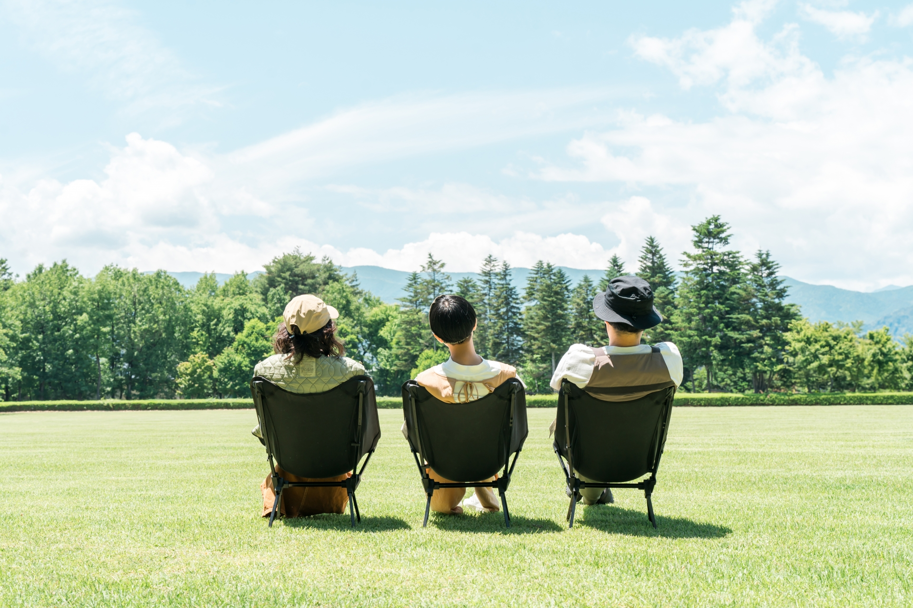

私のおすすめの休日の過ごし方
はじめに

私は休日にリフレッシュをすることを大切にしています。
平日の疲れをしっかり取ることで、次の週も気持ちよく過ごすことができます。
おすすめの過ごし方
休日の過ごし方として、特におすすめしたいのは以下の3つです。
リラックスする時間
心と体を休める時間を意識的に作ることが大切です。
- カフェでゆっくり読書をする
- 好きな音楽を聴く
外で過ごす時間
外に出て自然に触れることで、気分転換になります。
- 公園を散歩する
- 軽い運動をする
エンタメを楽しむ
自分の好きなことに没頭する時間も大切です。
- 映画やドラマを見る
- 趣味の時間を楽しむ
一日のスケジュール例
私の理想的な休日のスケジュールは次の通りです。
午前
- ゆっくり起きる
- カフェで朝食をとる
午後
- 散歩や買い物を楽しむ
夜
- 映画を見てリラックスする
おすすめスポット一覧
休日によく訪れる場所をまとめました。
| 場所 | 特徴 | おすすめポイント |
|---|---|---|
| GOOD MORNING CAFE | 静かで落ち着ける | 読書や作業に集中できる |
| 朝７時からモーニングが食べられる。 | ||
| 代々木公園 | 自然が豊か。 ランニング、散歩、ピクニックなど どんな用途でもGOOD | リフレッシュできる |
| グランドシネマサンシャイン池袋 | 大画面で楽しめる 12スクリーンと施設も充実 | 非日常を味わえる |
まとめ
休日は無理に予定を詰め込まず、自分がリラックスできる時間を大切にすることが重要です。
自分なりの過ごし方を見つけて、充実した時間を過ごしましょう。